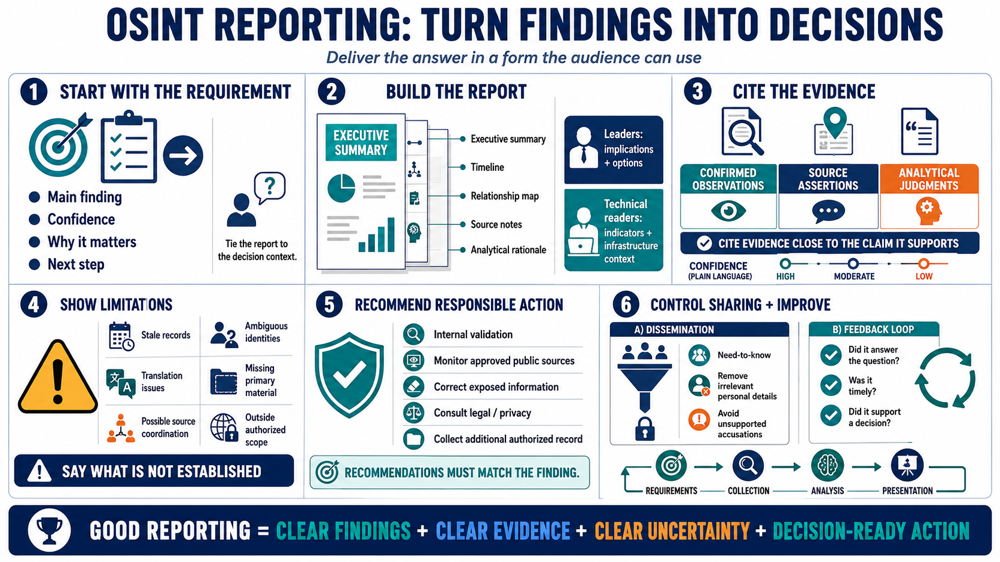

Report and Disseminate Results
Connecting to LMS... Progress: in progress

Narration
Reporting completes the workflow by delivering the answer in a form the intended audience can use. Start with the requirement and decision context. The report should make the main finding, confidence, significance, and recommended next step easy to identify.
An executive summary should be concise without hiding uncertainty. Supporting sections can provide a timeline, relationship map, source notes, and analytical rationale. Technical readers may need detailed public indicators or infrastructure context, while leaders may need implications and options.
Cite evidence close to the claim it supports. Distinguish confirmed observations, source assertions, and analytical judgments. Explain confidence in plain language and use the organization's defined confidence scale consistently.
Report limitations and gaps. Note stale records, ambiguous identities, translation issues, missing primary material, possible source coordination, and areas outside authorized scope. Decision-makers need to know what is not established and what could change the conclusion.
Recommendations should be lawful, proportionate, and tied to the finding. They may include internal validation, monitoring an approved public source, correcting exposed information, consulting legal or privacy staff, or collecting a specifically authorized additional record.
Control dissemination according to sensitivity and purpose. Remove irrelevant personal details and avoid unsupported accusations. Capture feedback: did the report answer the question, arrive in time, and support a decision? Use that feedback to improve future requirements, collection plans, analysis, and presentation.